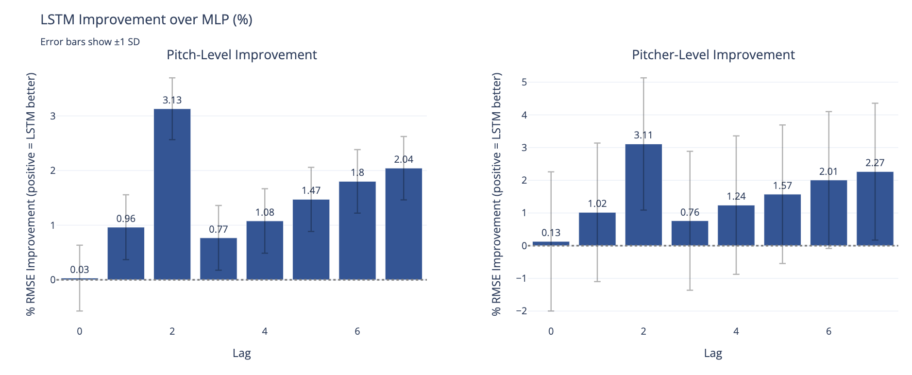

| Temporal Context in Deep Nets for MLB Pitch Modeling: A Study of Lag Length and Architecture | |||
| Henry Wang | |||
| Final project for 6.7960, MIT | |||
Results
We find strong evidence that LSTMs outperform MLPs on both pitch-level RMSE and pitcher-level RMSE in the autoregressive setting, which is not entirely surprising. The interesting finding here is that the performance gap increases with the number of lags and is driven by worsening MLP performance rather than improvements in the LSTM (Figures 3 and 4). Linearly increasing the number of lagged features fed to the fixed-architecture MLP appears to negatively impact the signal-to-noise ratio, hindering results in both training and out-of-sample contexts. By contrast, the LSTM gains little from additional lags but does not deteriorate, consistent with an ability to down-weight or forget noisy history. The LSTM provides consistent improvements ranging from approximately 1-3% in RMSE across different lag values (Figure 4). Ultimately, these results suggest that when we care about longer pitch histories, sequence models like LSTMs are a safer default than simply adding more lags to an MLP, though a larger or more strongly regularized MLP might narrow this gap.
Figure 3. Predictive Performance: LSTM vs MLP (Same Information Budget). RMSE comparison across different lag lengths for both pitch-level (left) and pitcher-level (right) evaluation. Shaded regions show ±1 standard deviation. The LSTM (green) maintains consistent performance while the MLP (purple) degrades as more lagged features are added.

Figure 4. LSTM Improvement over MLP (%). Percentage RMSE improvement of LSTM over MLP across different lag lengths. Error bars show ±1 standard deviation. Left panel shows pitch-level improvement; right panel shows pitcher-level improvement. The LSTM advantage peaks at lag 2 with 3.13% improvement at pitch-level and 3.11% at pitcher-level.
Performance by Pitch Number
As a next step, we break performance down by the pitch's position within the plate appearance (up to the 8th pitch) for a few lagged models (\(k \in \{3, 5, 7\}\)). For each \(k\), the LSTM's advantage over the MLP grows nearly monotonically as more pitches are seen, peaks around pitch \(k\), and then starts to taper off (Figure 5). This pattern fits the intuition that the LSTM gains most once it has access to its full \(k\)-pitch history, with additional context providing diminishing returns. Later pitch numbers are also rarer in the data, so the bars at 7 and 8 should be interpreted with a bit more caution.

Figure 5. LSTM Advantage by Pitch Number. Percentage RMSE improvement of LSTM over MLP at different pitch numbers within the plate appearance, shown for lag values \(k \in \{3, 5, 7\}\). Top row shows pitch-level RMSE; bottom row shows pitcher-level RMSE. The LSTM advantage peaks around pitch \(k\) (the lag length), then diminishes.
Figures 3 and 4 show LSTM stability and percentage improvement across lags, while Figure 5 reveals how LSTM advantage varies within each plate appearance.